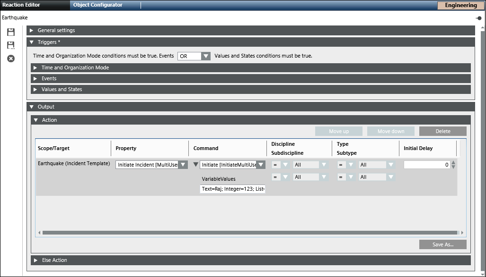
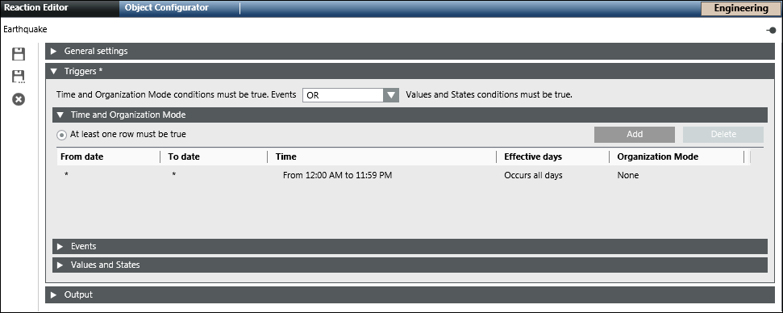

Initiate an Incident
This section describes procedures to initiate an incident.
Initiate an Incident using Command
- Select Applications > Notification > Incident Templates.
- Select the configured incident template to be initiated.
NOTE: The incident template should be configured with at least one Start launch group. - In the Extended Operation tab, navigate to the Initiate Incident property and perform any of the following steps to initiate the incident:
NOTE: Only one Initiate Incident property is available at one time. - If the selected incident template does not contain a user variable, click Initiate to initiate the incident template.
- If the selected incident template contains a user variable, enter variable text in the Variable Value field and click Initiate to initiate the incident template.
- The selected Incident Template is initiated.
NOTE: In order to view the command results after the command execution in the Primary pane. You must refresh the user interface by re-selecting the incident template from the System Browser.
Initiate an Incident using Reaction
- Select Applications > Logics > Reactions.
- The Reaction Editor tab displays.
- From Applications > Notification > Incident Template, drag the incident template, for example, fire trigger, on the Action expander of the Output expander.

- Do one of the following to select the required command from the Property drop-down list.
- Select Initiate Incident [NoUserVariableCommand], to initiate the incident without any user variable value.
- Select Initiate Incident [SingleUserVariableCommand], to initiate the incident with user variable value.
NOTE: For a single variable user value, enter the variable value in the Variable Value field. The variable value entered is used to fill all user variables present in the selected template during the initiate operation. It means the values of all user variables will be replaced by same value entered in the Variable Value field. If the provided variable value is not compatible with the type of a given user variable, the value of the affected user variable will be filled with the variable’s default value and will not be replaced with the entered text. - Select Initiate Incident [MultiUserVariableCommand], to initiate the incident with a multi user variable value
NOTE 1: For multi user variable value, enter the values as a series of key-value pairs.
Format of key-value pair string:
[User Variable Name]=[Value]; [User Variable Name]=[Value];…
NOTE 2: For multi-select user variables, enter the variable values separated by a comma and a space after the comma. For example, List=0, 1, 2 - In the Triggers expander, specify if the conditions specified in both, Events as well as Values and States expanders, must be true or if the conditions specified in either of the expanders must be true by selecting the appropriate operator (AND, OR) in the drop-down list.
- Open the Time and Organization Mode expander.
- Click New to add a new time row and enter a new time or schedule that periodically triggers the Initiate Incident command.

- Click Save As
 .
.